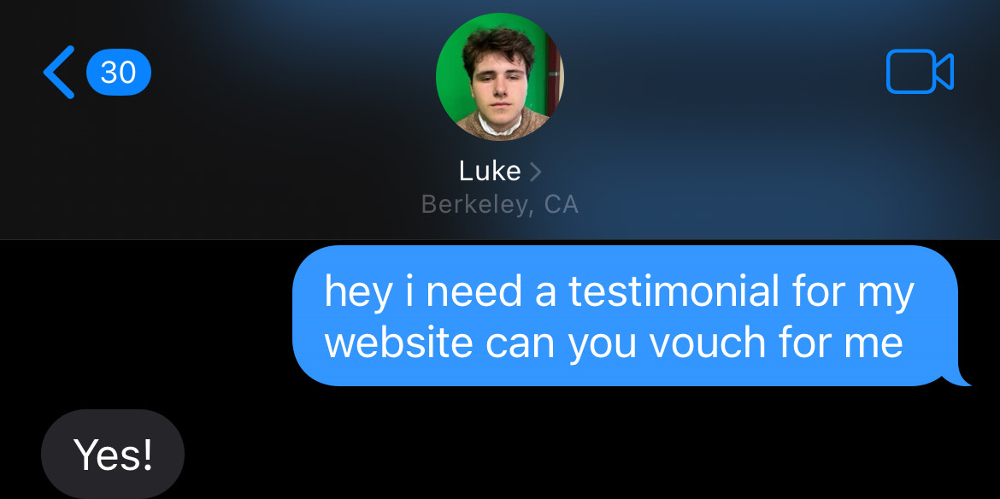

So, wanna know more about me, eh?
Well, if you insist...
My name is Zachary Rohatch, but you can call me Zac. As of December 7th, I am 20 years old; born and raised in the Bay Area. My interests span many nerdy things such as video games, drawing, cartoons, movies, and most important of all: MUSIC! Ever since the fourth grade I have been a fan of playing an instrument. I started on trumpet and then switched to piano, while also learning basic ukelele. In 2021 I was gifted FL Studio and my journey of making music in a professional sense began!

I upload my music to my Youtube channel, "Z Sharp Studios". You may also see me on Spotify, Apple Music, and countless other streaming services! For four years now I have been creating what I would consider high-quality content not only in the music itself, but the visual component as well. Over the course of these four years I have been met with success that surprised me, and it might push me into making this my career!
Strengths:
I have advanced knowledge of FL Studio and how to create music within the software.
I am an intermediate artist with the ability to create stills or basic animations for visualizers.
I know how to edit within Adobe Premiere Pro and have used it to create some of my visualizers.
I have social media awareness and know how to manage multiple accounts across different platforms.
Let's hear some testimonials from some highly regarded individuals!
Rousing stuff! Bet you wanna hire me now, huh?